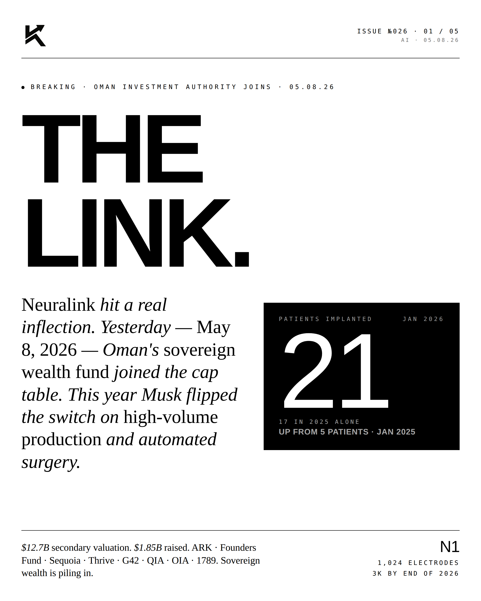
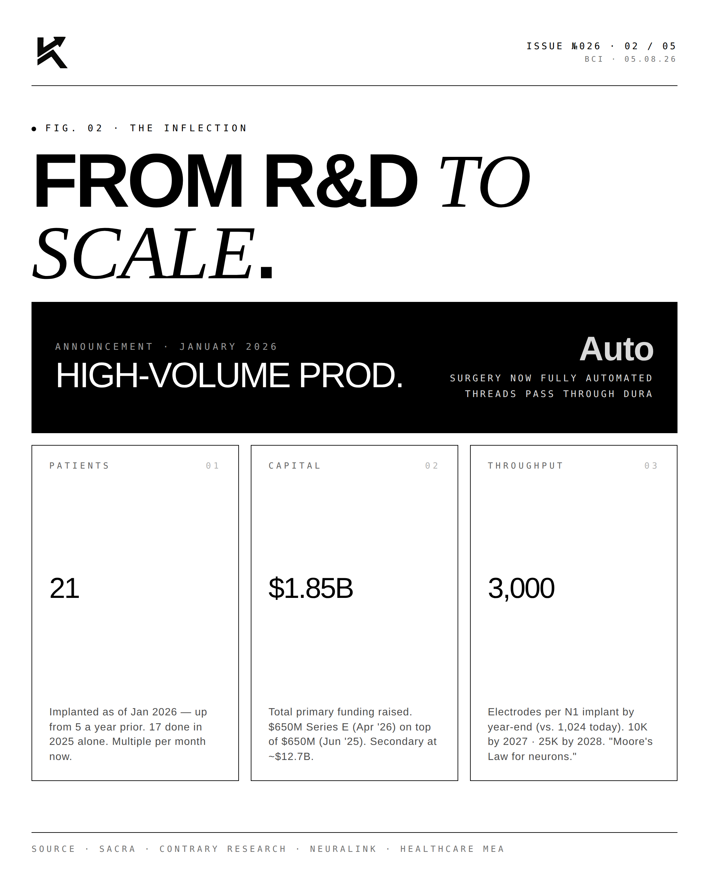
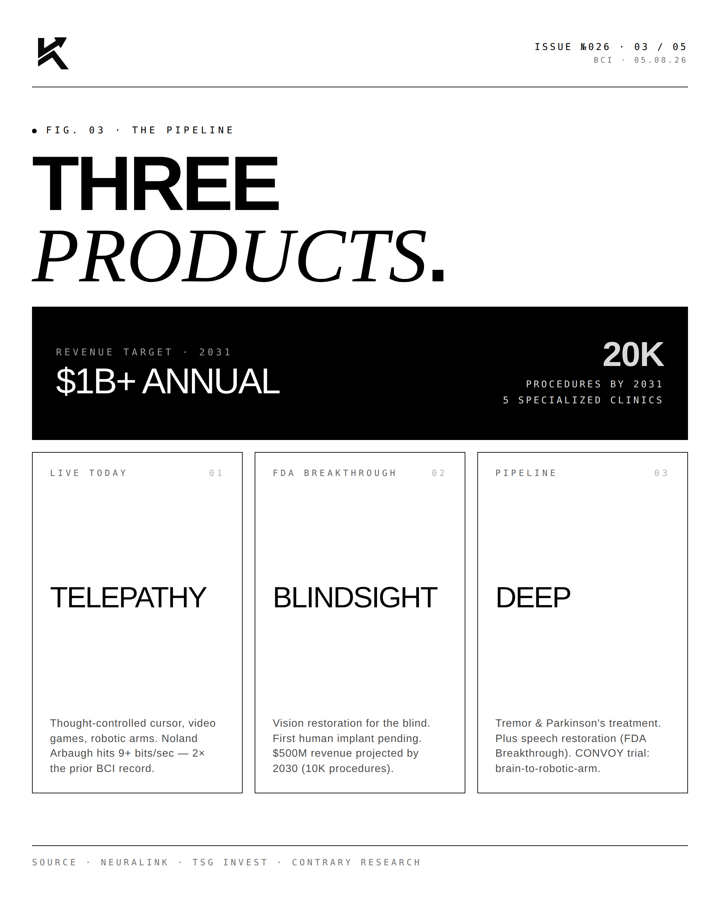
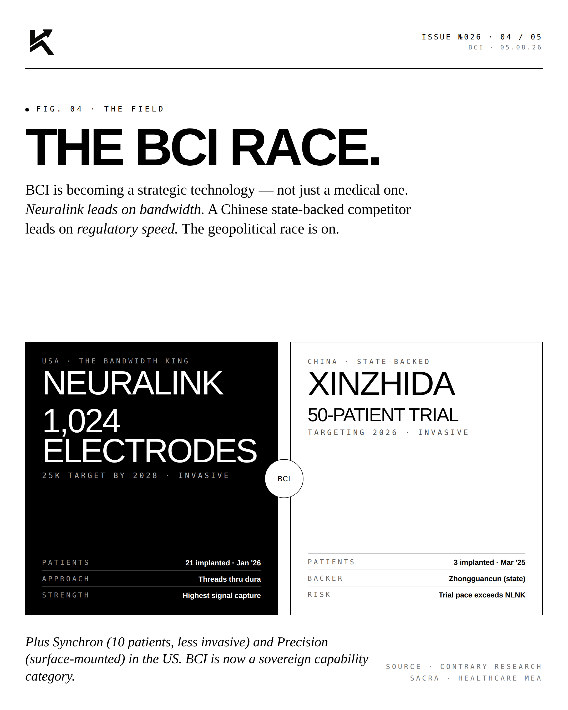
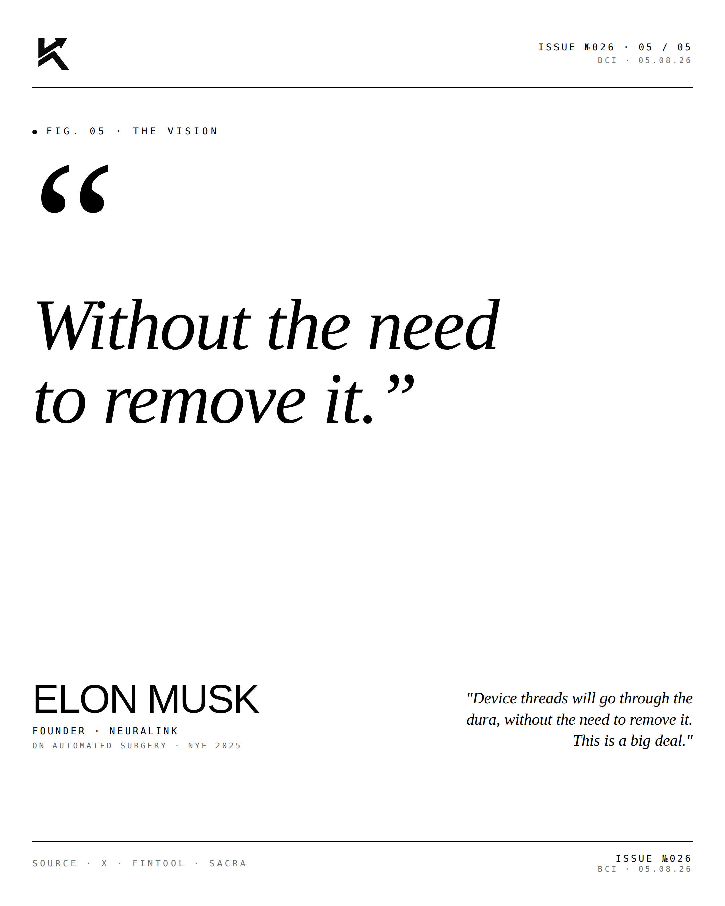

The Link.
Neuralink hit a real inflection. Yesterday — May 8, 2026 — Oman's sovereign wealth fund joined the cap table. This year Musk flipped the switch on high-volume production and automated surgery.

The Inflection.
For most of its first decade, Neuralink lived in the Musk distortion field — a moonshot venture pitched somewhere between cyberpunk and clinical trial. The first patient implant in January 2024 changed the conversation. The events of 2025 and the first months of 2026 changed the company. What's emerged is no longer a moonshot. It's a vertically-integrated brain-computer interface manufacturer with FDA Breakthrough Device designations across three product lines, sovereign wealth funds piling onto the cap table, and a clear path to $1 billion in annual revenue by 2031.

The Numbers.

- 21 patients implanted as of January 2026, up from 5 a year prior
- $1.85B total primary funding raised. ~$12.7B implied secondary valuation
- 1,024 electrodes per N1 implant today. 3,000 by end of 2026. 10,000 by 2027. 25,000+ by 2028
- Revenue target: $1B+ annually by 2031, across 5 specialized clinics
- Cap table: ARK Invest · Founders Fund · Sequoia · Thrive Capital · Lightspeed · DFJ Growth · Valor Equity · G42 (UAE) · QIA (Qatar) · OIA (Oman, just added) · 1789 Capital

Three Products.
Telepathy is the live product. Thought-controlled cursor, video gameplay, and (via the CONVOY trial) direct connection to robotic arms. Noland Arbaugh — the first patient — has been demonstrating these capabilities in livestreams since 2024, hitting 9+ bits/sec, twice the prior BCI record.
Blindsight targets vision restoration. FDA Breakthrough Device designation. First human implant pending. Projected $500M revenue by 2030 (10K procedures).
Deep addresses tremor and Parkinson's via deep-brain stimulation, plus a parallel speech restoration program (also FDA Breakthrough).

The Race.
The most underrated dimension is geopolitical. Beijing Xinzhida — Chinese state-backed via the Zhongguancun development zone — implanted its first three patients in March 2025 and is targeting a 50-patient trial in 2026. That trial pace exceeds Neuralink's current cadence. Plus Synchron (10 patients implanted, less invasive blood-vessel-deployed device) and Precision Neuroscience (surface-mounted approach) in the U.S. BCI is becoming a strategic technology category — not just a medical one.
"Without the need
to remove it."ELON MUSKFounder · Neuralink · On automated surgery · NYE 2025
"Device threads will go through the dura, without the need to remove it. This is a big deal."
From science fiction to medical device. From R&D to scale. From speculation to the link.
Disclosure
The author is a Limited Partner in 1789 Capital, which holds a position in Neuralink. Personal commentary and editorial analysis. Not investment advice, not an offer or solicitation.